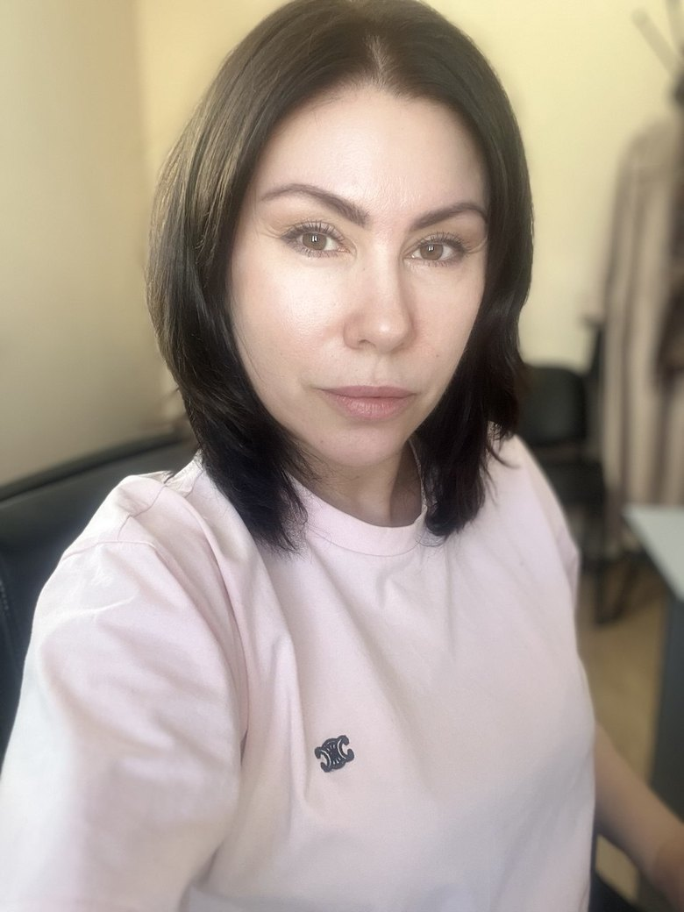

Онлайн и очно · Москва, Мясницкая
Психоаналитический психолог с 20-летним опытом работы в бизнесе
Помогаю, когда работа забирает силы и смысл. Разбираемся, что на самом деле стоит за усталостью, конфликтами и карьерным тупиком.

С чем приходят
Узнаёте себя?
Сил нет, а остановиться не могу. Если сбавлю темп, всё развалитсяВыгорание
Снаружи всё есть: должность, доход. А внутри пустоПотеря интереса к работе
Не знаю, чего хочу. Кажется, живу не свою жизньПоиск призвания
Работаю пять лет, а меня не повышают. Упёрся в потолокКарьера
Начальник давит, с коллективом конфликты. Объясняю, а меня не слышатОтношения на работе
Новая должность, и я не понимаю, как в ней справлятьсяНовая роль
Компаниям: конфликты в команде, выгорание сотрудников, смена руководителя, переход специалиста в роль руководителя.
Начальник давит, всё достало, хочется уволиться в никуда?
Заберите бесплатный чек-лист и проверьте, это выгорание или просто усталость. 10 вопросов, 5 минут.
Чек-лист помогает разобраться в себе, но не ставит диагноз.Как я работаю
Три направления
Больше 20 лет я работала в бизнесе и знаю его изнутри. Психоаналитический подход помогает увидеть то, что человек сам в себе не замечает.
Индивидуальная работа
- Выгорание, потеря интереса, поиск призвания
- Отношения с руководителем и коллективом
- Психоаналитический коучинг
- Карьерное консультирование
- Менторинг
Групповая работа
- Небольшие группы с похожими запросами
- Опыт других участников как ресурс
- Тема первой группы: уточнить
Для бизнеса: лидеры и команды
- Работа с руководителем и собственником
- Работа с командой по заказу компании
Запись
Начнём с короткой встречи
30 минут, чтобы обсудить вашу ситуацию и понять, подходит ли вам такая работа. Ни к чему не обязывает.
- Telegram
- @EktrMkh
- +7 916 900-71-70
- Почта
- почта
Для тех, кому важны детали
Подробнее
Обо мне и образование
Больше 20 лет я работала в бизнесе и знаю организацию изнутри: коллектив, команду, руководителей, давление сроков. Поэтому работаю именно с рабочими и бизнес-запросами: понимаю, о чём говорят клиенты, с полуслова.
НИУ ВШЭ, магистратура «Психоанализ и психоаналитическое бизнес-консультирование»
Практика в проекте ВШЭ «Доступный коучинг»: индивидуальный, групповой и корпоративный форматы
Супервизии и интервизии
Экономика и управление на предприятии, экономист-менеджер
Поиск призвания
Призвание там, где сходятся «хочу», «могу» и «надо»
Это попытка найти в работе частичку смысла жизни. Раньше работу было нормой просто выносить. Сегодня всё больше людей не готовы с этим мириться.
На бумаге всё просто: ответить себе, чего я хочу, что могу и что будет востребовано. На деле чаще звучит:
- «Не знаю, чего хочу»
- «Не знаю, что я могу»
- «Не понимаю, что „надо“ мне и миру»
Я иду за вашим желанием. Помогаю услышать, чего хотите именно вы, а не родители, начальник или рынок. «Могу» и «надо» потом складываются вокруг него.
«В жизни нужно делать то, что тебе нравится делать. А из этого то, в чём ты можешь быть лучшим¹. А из этого то, за что платят деньги».
Т. Гагин ¹ Мы скажем — «достаточно хорошим» :)Карьерное консультирование и менторинг
Карьерные запросы
- «Я в тупике. Не понимаю, как достичь цели»
- «Хочу вырасти в руководителя, не понимаю как»
- «Как попросить о повышении зарплаты?»
- «Давно перерос свою должность»
- «Решаю операционку, на стратегию нет времени»
Что разбираем
- Кризисы: возрастные, внутренние, профессиональной идентичности
- Иерархию: где моё место
- Профессиональное поле: ниша, рынок
- Отношения с организацией и группами
Менторинг — для кого
- Новые руководители
- Те, кто меняет профессию
- Начинающие специалисты и новые сотрудники
Как устроен
Ментор — попутчик, который прошёл похожий путь. Отношения «взрослый со взрослым». Главная задача — выйти из привычных моделей мышления и увидеть ситуацию по-новому.
- Конфиденциальность
- Доверие
- Добровольность
- Партнёрство
- Эмпатия
- Ограниченность во времени
- Опора на бессознательное
Для бизнеса: лидеры и команды
Руководителю и собственнику
- Выгорание и потеря интереса к своему делу
- Решения, которые долго откладываются
- Делегирование при перегрузке
Команде
- Конфликты, скрытые и открытые
- Потеря вовлечённости
- Новый руководитель или новый состав
Сначала встреча с заказчиком: уточняем задачу, участников и ожидаемый результат. Содержание индивидуальных встреч остаётся конфиденциальным.
Чем мой подход отличается
Понимаю ваш мир
Не нужно объяснять, что такое планёрка в девять вечера или новый начальник. Я сама через это проходила.
Смотрю глубже симптома
Выгорание, конфликты и застой часто повторяют старые сценарии. Когда сценарий виден, появляется выбор.
| Кто | Что делает | Когда подходит |
|---|---|---|
| Бизнес-коуч | Помогает поставить цель и дойти до неё | Цель ясна, нужен план |
| Психотерапевт, психиатр | Ставит диагнозы, лечит травмы и расстройства | Есть клинические симптомы |
| Психоаналитический психолог | Помогает понять, что на самом деле мешает, и найти решение | Цель не ясна, или знаете, что делать, но не делаете |
Вопросы и ответы
Стоимость обсуждаем на знакомстве, она зависит от формата. Каждая сессия оплачивается после её проведения.
Зависит от запроса. Иногда хватает нескольких встреч, глубокие темы требуют регулярной работы в течение нескольких месяцев.
Нет. Я не ставлю диагнозы и не лечу психологические травмы. Если нужна помощь врача, скажу об этом и подскажу, куда обратиться.
Нет. Если работу оплачивает компания, заранее договариваемся, какую общую информацию получит заказчик. Содержание разговоров в неё не входит.
Правило из оферты